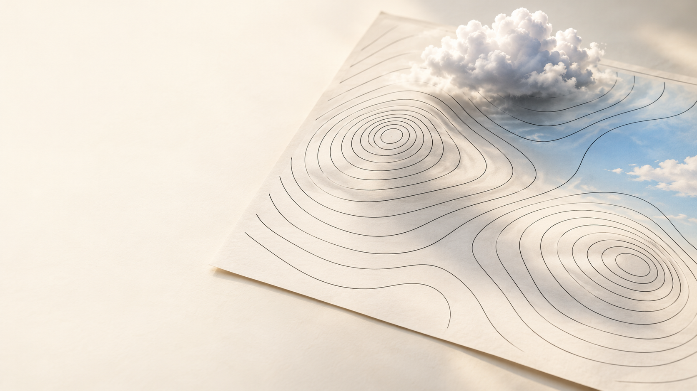

中2 理科・地学
天気図と
気象の変化
天気図・1日の変化・高気圧と低気圧

天気図
観測を、地図に集めよう
天気図から、気圧と風を読み取る。
同じ時刻の観測を並べると？
各地点の数値は、気圧を表している。
各地の天気や気圧を地図に示すと天気図になる
同じ気圧を、結んでみよう
1004hPaの地点をたどると？
同じ気圧の地点を結んだ線等圧線
線の上は、どこでも同じ気圧
Aの線は、何hPa？
1000と1008の間を読もう。
線は4hPaごと1000の次は？
答えA＝1004hPa
中心は、周りより高い？ 低い？
等圧線の値を、外から内へ追おう。
左の中心周囲より低い＝低気圧
右の中心周囲より高い＝高気圧
風が強いのは、A？ B？
同じ距離で、気圧が大きく変わるのは？
等圧線が混み合うA風が強い
理由同じ距離での気圧差が大きい
天気図の線を、自分で読む
Aの気圧と、中心が高いか低いかを答えよう。
4hPaごとの線をたどる外から1016、1012、1008
答えA＝1012hPa、中心は低気圧
理由中心へ向かって気圧が低くなる
1日の気象の変化
1日で、気温と湿度はどう変わる？
グラフを読んで、変化の理由まで考える。
気温が最も高いのは、何時ごろ？
最も低い時刻も探そう。
最も高いのは14時ごろ
最も低いのは日の出ごろ
最高と最低の差を日較差という
気温が上がると、湿度は？
同じ時刻どうしを比べよう。
水蒸気量があまり変わらないとき気温が上がると湿度は下がる
気温が下がると湿度は上がる
晴れの日と、曇り・雨の日
気温の変化の幅が大きいのは、どちら？
晴れの日は日較差が大きくなりやすい
曇り・雨の日は日較差が小さくなりやすい
晴れた昼、地面はどうなる？
日光と、地面と、空気の順に追おう。
日光で地面が温まる
その地面が空気を温める
晴れた夜、地面の熱は？
太陽が沈んだあとも、地面は熱を出す。
地面から熱が放射されると地面が冷える
晴れて雲が少ない夜は地面が冷えやすい
晴れた日に近いのは、A？ B？
気温の変化の幅と、湿度の変化を根拠にしよう。
着目するところ気温の最高と最低、同時刻の湿度
答えAの方が晴れた日に近い
理由気温の幅が大きく、昼に湿度が下がる
高気圧・低気圧
風と雲を、空気の動きから考える
横から見て、上から見て、二つをつなげる。
温まった空気は、どう動く？
周りより温まった空気に注目しよう。
地面に温められると膨らみ、周囲より密度が小さくなる
その空気が上へ動くと上昇気流
上がると、空気はなぜ膨らむ？
上空では、周りから押す気圧が低くなる。
周りから押す力が弱くなると空気のかたまりが膨張する
膨張すると温度が下がる
冷えると、雲ができるのは？
水蒸気量は同じでも、温度が下がると？
冷えると湿度が上がる
露点に達すると水蒸気が水滴などになる
小さな水滴や氷の粒が集まると雲になる
雲ができたら、すぐ雨？
雲の小さな粒が、その後どうなると落ちる？
粒がさらに成長すると雨や雪として落ちることがある
雲ができても必ず雨が降るわけではない
低気圧を、横から見る
地表の空気が中心へ集まる。その先は？
地表付近では中心へ吹き込む
中心付近では上昇気流
空気が冷えると雲ができやすい
低気圧を、上から見る
空気が中心へ向かう道筋を追おう。
日本付近・北半球では反時計回りに吹き込む
曲がる向きには地球の自転が関係する
高気圧を、横から見る
上から下りてきた空気は、どうなる？
中心付近では下降気流
下りると圧縮されて温度が上がり、湿度が下がる
そのため雲が消えやすく、晴れやすい
高気圧を、上から見る
地表へ下りてきた空気は、どこへ進む？
日本付近・北半球では時計回りに吹き出す
地表の中心から周りへ広がる
横と上は、同じ空気の動き
上からの吹込みと、横からの上昇をつなげよう。
低気圧の地表の風反時計回りに吹き込む
中心付近の上下の動き上昇気流
高気圧も、二つの向きから
下降した空気が、地表でどう進むか追おう。
高気圧の中心付近下降気流
地表の風時計回りに吹き出す
空気が集まる。その先を答えよう
上昇・下降のどちら？ 雲はできやすい？
地表で中心に集まる風に注目次に上下の動きを考える
答え上昇気流。雲ができやすい
理由上昇して膨張すると、空気が冷える
低気圧の東側。風はどこから？
地点Aを通る粒の動きを見よう。
Aでの空気の移動先北西向きへ進む
吹いてくる向きは、その反対南東の風
確かめる地点A付近の流れをもう一度追う
低気圧の南側。風はどこから？
地点Aを通る粒の動きを見よう。
Aでの空気の移動先北東向きへ進む
吹いてくる向きは、その反対南西の風
確かめる地点A付近の流れをもう一度追う
低気圧の西側。風はどこから？
地点Aを通る粒の動きを見よう。
Aでの空気の移動先南東向きへ進む
吹いてくる向きは、その反対北西の風
確かめる地点A付近の流れをもう一度追う
低気圧の北側。風はどこから？
地点Aを通る粒の動きを見よう。
Aでの空気の移動先南西向きへ進む
吹いてくる向きは、その反対北東の風
確かめる地点A付近の流れをもう一度追う
高気圧の東側。風はどこから？
地点Aを通る粒の動きを見よう。
Aでの空気の移動先南東向きへ進む
吹いてくる向きは、その反対北西の風
確かめる地点A付近の流れをもう一度追う
高気圧の南側。風はどこから？
地点Aを通る粒の動きを見よう。
Aでの空気の移動先南西向きへ進む
吹いてくる向きは、その反対北東の風
確かめる地点A付近の流れをもう一度追う
高気圧の西側。風はどこから？
地点Aを通る粒の動きを見よう。
Aでの空気の移動先北西向きへ進む
吹いてくる向きは、その反対南東の風
確かめる地点A付近の流れをもう一度追う
高気圧の北側。風はどこから？
地点Aを通る粒の動きを見よう。
Aでの空気の移動先北東向きへ進む
吹いてくる向きは、その反対南西の風
確かめる地点A付近の流れをもう一度追う
初めての天気図から、考えよう
AとB、晴れやすいのは？ 中心の気流は？
等圧線の数値からAは高気圧、Bは低気圧
晴れやすいのはA：下降気流
Bでは上昇気流で雲ができやすい
覚えること｜高気圧・低気圧
まず、自分の言葉で答えよう。
低気圧吹き込む・上昇・雲ができやすい
高気圧下降・吹き出す・晴れやすい
北半球の回転低：反時計回り ／ 高：時計回り
総合問題
自分で、読んで説明しよう
記号・グラフ・天気図の初見3問。
総合1｜天気・風向・風力
3つを、自分で読み取ろう。
まず見る場所丸の中・棒の向き・矢羽根の本数
答え雪・南西の風・風力2
根拠雪の記号、南西へ伸びる棒、矢羽根2本
総合2｜晴れた日を選ぶ
AとBのどちら？ 気温と湿度を根拠に説明しよう。
読む場所最高・最低の差と、同時刻の湿度
答えBの方が晴れた日に近い
理由Bは日較差が大きく、昼に湿度が下がる
総合3｜風と天気を説明する
AとBの気流・天気の傾向・回転方向を答えよう。
中心へ向かう気圧の変化を読むAは低気圧、Bは高気圧
A上昇・雲ができやすい・反時計回りに吹込み
B下降・晴れやすい・時計回りに吹出し
覚えること｜自分で解くために
まず、自分の言葉で答えよう。
観測記号天気・吹いてくる方角・風力を読む
1日のグラフ最高・最低と、気温・湿度の関係を読む
天気図気圧の高低から、風と気流・天気を考える